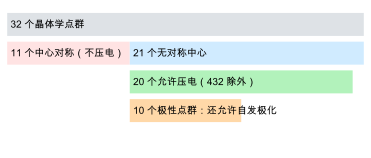
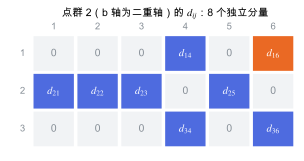

晶体对称性与空间群
空间群、点群与 Wyckoff 位置：对称性怎样约束结构，又怎样让一部分张量分量为零。
直观阅读需要
- 旋转、反演、镜面这几种对称操作
- 晶格与晶胞
完整推导还需要
- 群的基本概念（封闭、单位元、逆元）
- 张量与坐标变换 的坐标变换
只是提示，不需要先读完才能往下看。
直觉直观解释
晶体的对称性是一组把晶体变回自身的操作。它有两层：
- 空间群 (space group)：包括平移、旋转、镜面，以及旋转或镜面与分数平移的组合（螺旋轴、滑移面）。三维共 230 个。它决定原子可以放在哪里、一个分子会被复制成几份。
- 点群 (point group)：把空间群里的平移部分去掉，只留下方向上的操作。三维晶体共 32 个。宏观性质（弹性、介电、压电）只看点群。
对称性在两个方向上起作用。对结构，它减少自由参数：只要给出不对称单元，其他原子由对称操作生成。对性质，它让张量的一部分分量必须为零，另一些分量必须相等。这条规则叫 Neumann 原理。

| 符号 | 是什么 | 图里对应 |
|---|---|---|
| 32 个点群 | 三维晶体所有可能的宏观对称 | 灰色条 |
| 有对称中心 | 含反演操作 \bar 1 | 红色条 |
| 无对称中心 | 不含反演 | 蓝色条 |
| 允许压电 | 三阶压电张量可以不为零 | 绿色条 |
| 极性点群 | 存在一个所有操作都不改变的方向，因而允许自发极化 | 橙色条 |
定义与公式数学与推导
两个直接推论：
- 若点群含反演 R = -I，上式变为 d_{ijk} = -d_{ijk}，所以全部为零。二阶张量（介电、应变）和四阶张量（弹性）不受此限制。
- 若点群含二重轴，取 y 方向为轴：R = \mathrm{diag}(-1, 1, -1)。于是 d_{ijk} 只有在 i, j, k 中 x 和 z 合计出现偶数次时才可以不为零。
点群 2 的压电分量
把上面的规则换成 Voigt 记号（jk \to 1–6：xx, yy, zz, yz, xz, xy），对二重轴沿 y（即晶体学 b 轴）的点群 2，得到 8 个独立分量：

| 符号 | 是什么 | 图里对应 |
|---|---|---|
| 行 1–3 | 极化（或电场）方向 x, y, z | 左侧灰色数字 |
| 列 1–6 | Voigt 应力分量 xx, yy, zz, yz, xz, xy | 上方灰色数字 |
| d_{ij} | 允许不为零的分量 | 蓝色格子 |
| d_{16} | xy 剪切应力引起的 x 方向极化 | 橙色格子 |
可以逐个验证：例如 d_{16} 对应 d_{x,xy}，其中 x 出现 2 次、z 出现 0 次，合计偶数，允许；d_{11} 对应 d_{x,xx}，x 出现 3 次，必须为零。
在本研究线里的样子对应与边界
- β-甘氨酸：空间群 P2_1，点群 2。它没有对称中心，所以允许压电；点群 2 是极性点群，所以也允许沿二重轴的自发极化。
- 设置决定下标：单斜晶系有不同的晶体学设置（二重轴选 b 或 c），笛卡尔坐标与晶轴的对应也有不同约定。上图假设二重轴沿 b，且 b \parallel y。换一种设置，“d_{16}”对应的矩阵位置会改变。读文献和程序输出时先确认这一点。
- 晶体结构预测与生成模型：按空间群和 Wyckoff 位置放置分子，可以大幅缩小搜索空间（见 晶体结构预测：搜索与排序、晶体结构生成模型）。许多工具（例如 spglib、pymatgen）在给定容差下识别空间群；容差取值会改变识别结果。
常见坑对应与边界
- 对称容差太松或太紧：优化后的结构有微小数值偏离，太紧的容差识别成 P1，太松的容差可能识别出不存在的更高对称。
- 点群与空间群混淆：张量零化只看点群；P2_1 与 P2 的螺旋轴和纯旋转轴，在宏观性质上等价。
- 计算中对称性被破坏或强加：VASP 中
ISYM控制是否使用对称性。有限差分位移会暂时破坏对称性，程序会相应处理；但如果初始结构对称性识别错误，所有结果都会受影响。 - 把“允许不为零”当作“很大”：对称性只说哪些分量可以不为零，不说它们有多大。
检验自己对应与边界
参考资料
教材International Tables A
尚未实际查阅，目前只是拟查阅书目
官方文档IEEE Std 176
IEEE Standard on Piezoelectricity, ANSI/IEEE Std 176-1987
尚未实际查阅，目前只是拟查阅书目
分类晶体与固体 · 概念 · 研究线：压电与响应计算、晶体结构生成、结构预测与能量景观 · 状态：草稿